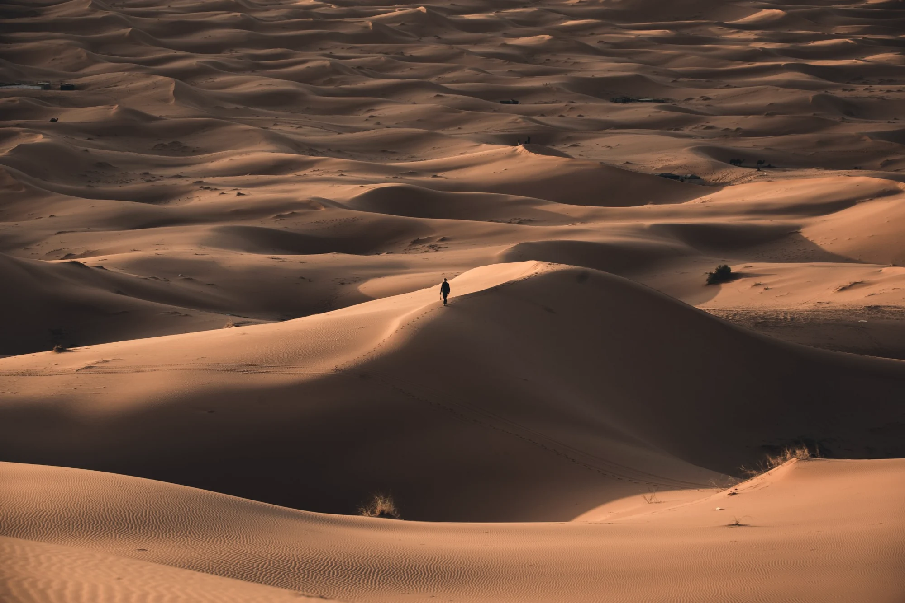
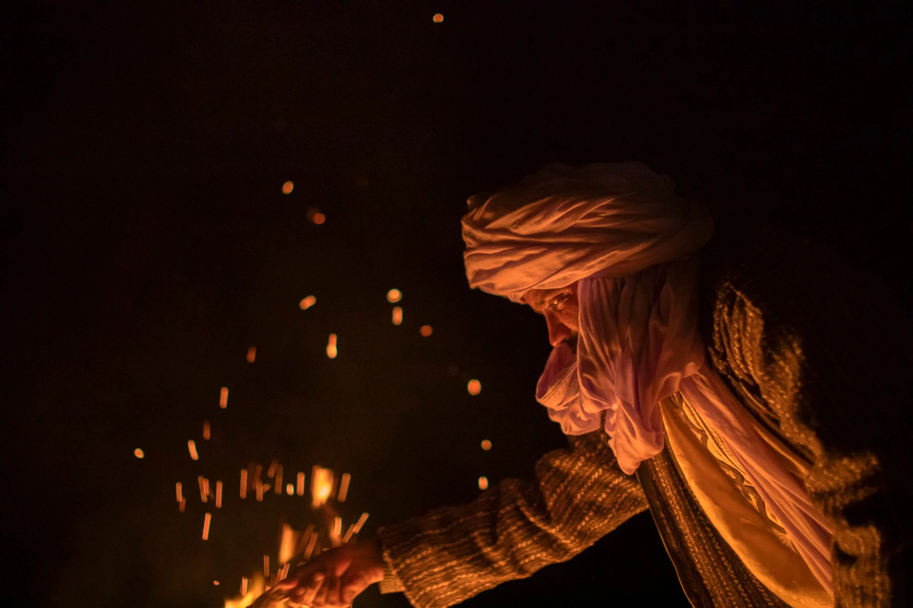
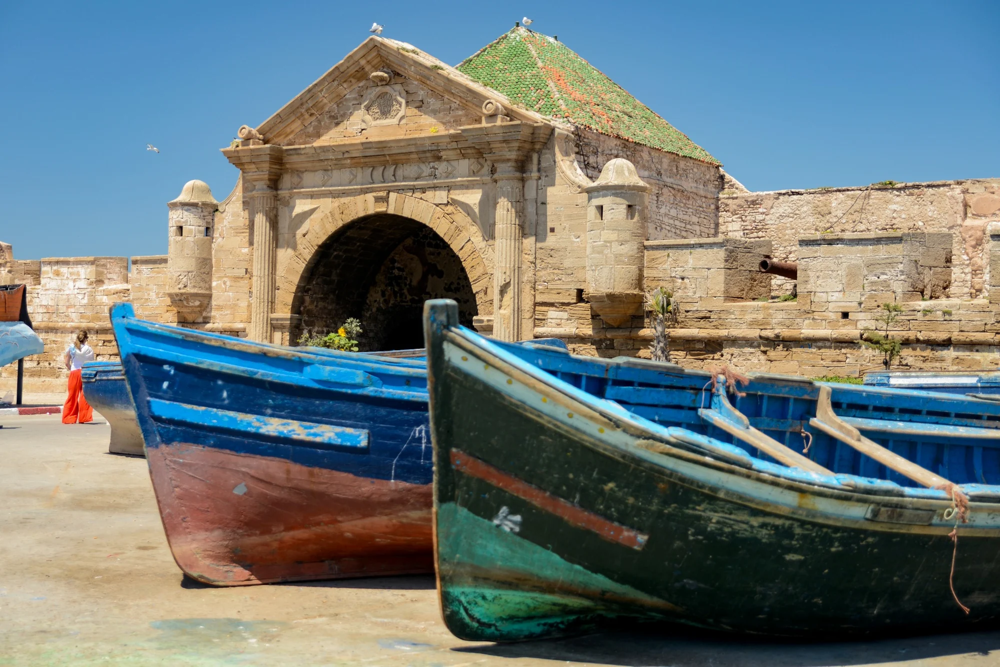
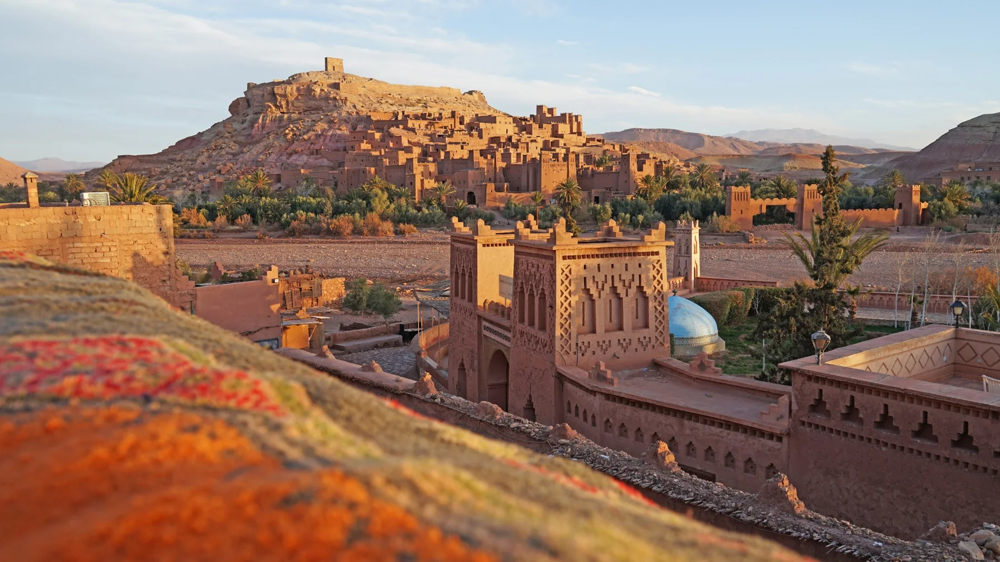

Rutas de referenciaHay muchos Marruecos.
Hay muchos Marruecos.
¿Cuál os llama?
Viajes creados para recorrer el país con tiempo, entre ciudades, costa, Atlas, oasis y el Sahara. Cada itinerario puede adaptarse.

Dos paisajes · Dos maneras de vivir el Sahara
¿Erg Chigaga o Merzouga?
Encuentra el desierto que encaja con tu viaje.
Compara los dos destinos ↗8 días · De Marrakech al corazón del Sahara
The Desert Journey
Marrakech · Atlas · Aït Ben Haddou · Oasis de Fint · Erg Chigaga
Descubre el recorrido ↗
10 días · El alma del sur de Marruecos
The Nomad Route
Marrakech · Oasis Fint · Valle del Drâa · Erg Chigaga · Aït Ben Haddou
Descubre el recorrido ↗
8 días · El arte de viajar despacio
Moroccan Soul
Marrakech · Essaouira · Ouirgane
Descubre el recorrido ↗
11 días · Del Atlántico a las dunas del Sahara
Atlantic to Sahara
Marrakech · Essaouira · Taroudant · Erg Chigaga · Oasis Fint · Valle del Drâa
Descubre el recorrido ↗
12 días · De las ciudades al corazón del Sahara
The Imperial Journey
Casablanca · Fez · Dades · Erg Chigaga · Oasis Fint · Aït Ben Haddou · Marrakech
Descubre el recorrido ↗¿Tenéis otra idea en mente?
También diseñamos viajes desde cero para viajeros y grupos privados. Contadnos qué queréis vivir y lo trabajamos juntos.
Cuéntanos vuestra idea ↗